Kagoshima | Claude Meetup 2026-10-31
竹内 尊紀（おたけ）
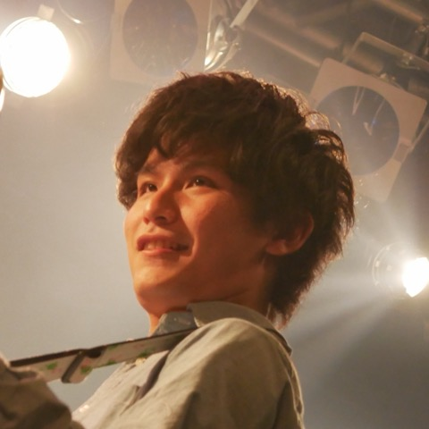
事業会社でSE / 開発PL
何を決める設定か、いつもの画面のどこにあるか
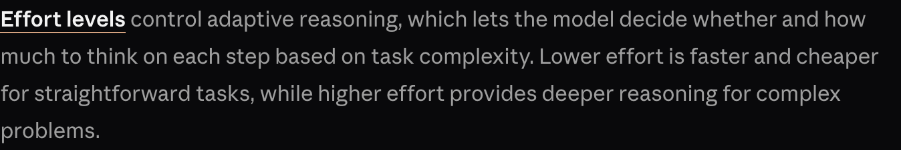
公式：作業の難しさを見て、考えるか・どれだけ考えるかをモデルが決める
単純な作業を速く、安く
例：名前の変更、たたき台づくり
複雑な問題を深く考える
例：既存コードのバグ修正。時間とトークンは増える
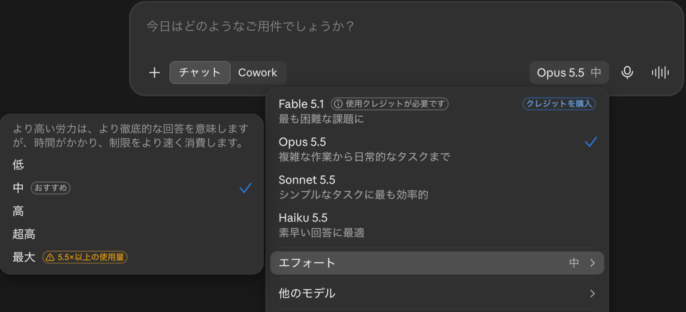
低・中・高・超高・最大＝low・medium・high・xhigh・max
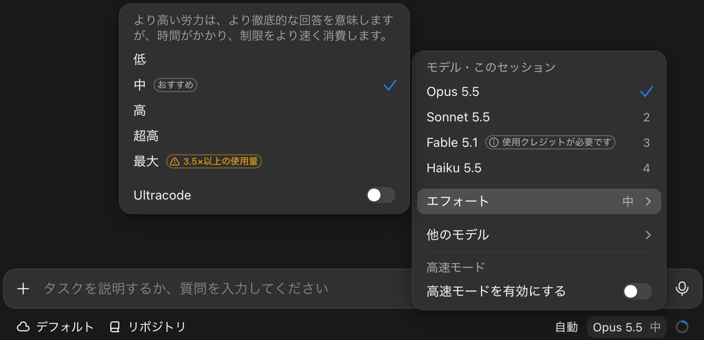
入力欄の右下「Opus 5.5 中」から。⌘⇧Eでエフォートを直接開ける
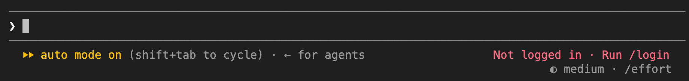
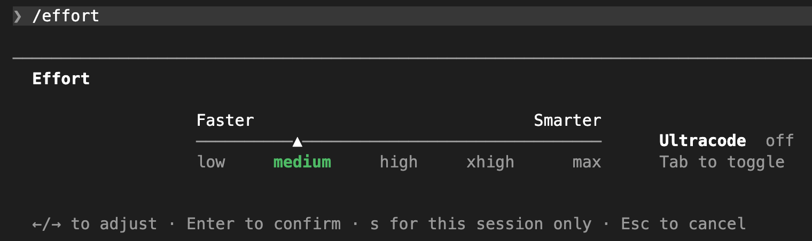
右下に今の段階。/effort でスライダーが開き、←→で選ぶ
9/22公開のOpus 5.5で既定が1段下がった
max：難問向け。ただし改善は頭打ちになりやすく、考えすぎる。広く使う前に試す
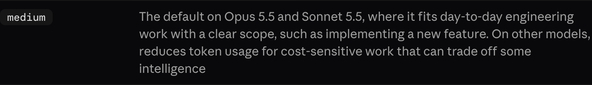
medium：Opus 5.5の既定。範囲の明確な日々の開発作業向け
だから一度、maxを既定にして試すことにした
僕は普段、Claude Codeをターミナルで使っている
claude --effort high
CLAUDE_CODE_EFFORT_LEVEL=high
僕がよく使うのは /model。モデルとeffortを1画面で選べる
Enterキーなら保存、sキーならこのセッションだけ
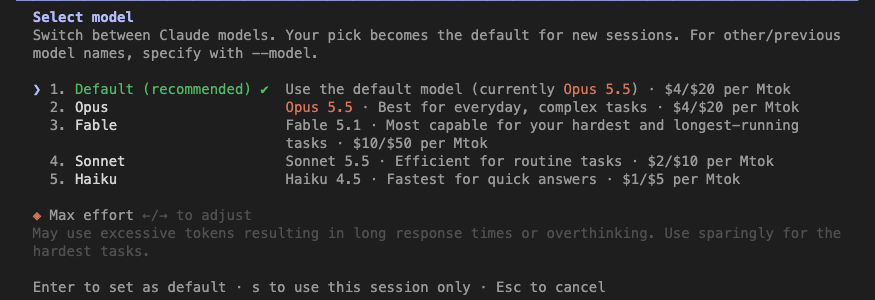
「Your pick becomes the default for new sessions」「Enter to set as default」。迷わずEnter
Enter直後：「新規セッションの既定に保存した」と表示。右下のステータスは max
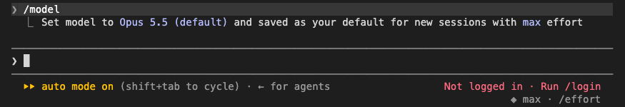
同じ設定のまま再起動：ステータスは medium
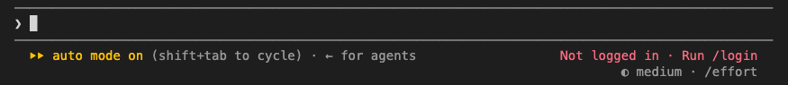
saved as your default for new sessions with max effort
「既定に保存した」と表示
Set effort level to max (this session only)
「このセッションだけ」と表示
settings.jsonは {} のまま。保存されたのはモデルだけ
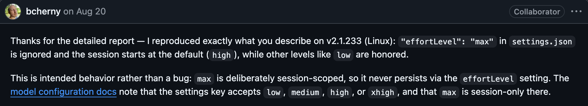
Claude Codeチームの回答：バグではなく意図した動作。maxはわざとセッション限り
#35904は2026年3月の報告。8人がコメントし、👍は22件
$ export CLAUDE_CONFIG_DIR=$(mktemp -d) && claude ❯ /model # Max effort → Enter「saved as your default…」 $ cat "$CLAUDE_CONFIG_DIR/settings.json" {}
当時最新の2.1.288、ログインなしでも同じ結果
保存されないのは仕様。間違っていたのは画面の説明のほう
…saved as your default for new sessions with max effort
maxも保存されたと読める
…saved as your default for new sessions · max effort for this session only
保存したものとセッション限りを分ける
直してほしい1点に絞り、既存issueとの違いも明記
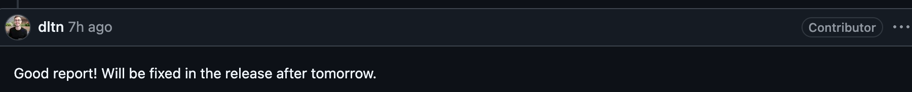
仕様は受け入れ、表示のずれだけ報告して修正に
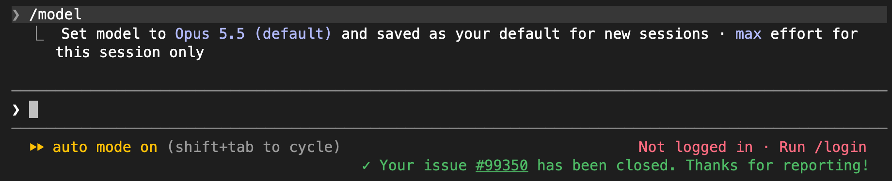
「既定に保存したのはモデル、maxはこのセッションだけ」と分けて表示
settings.jsonは {} のまま。仕様は変えず、表示だけが直った
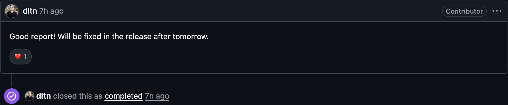
Claude Codeの中の人に反応をもらえた